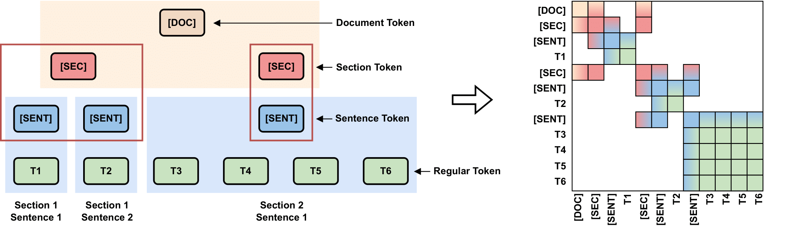
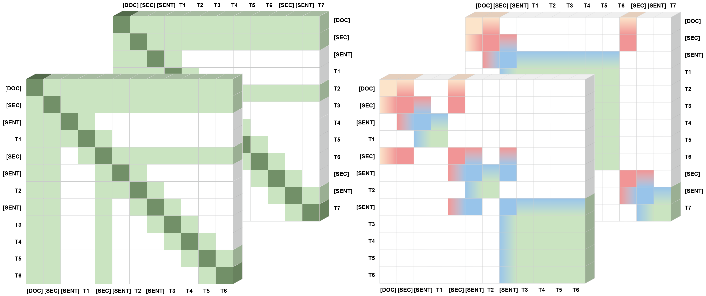
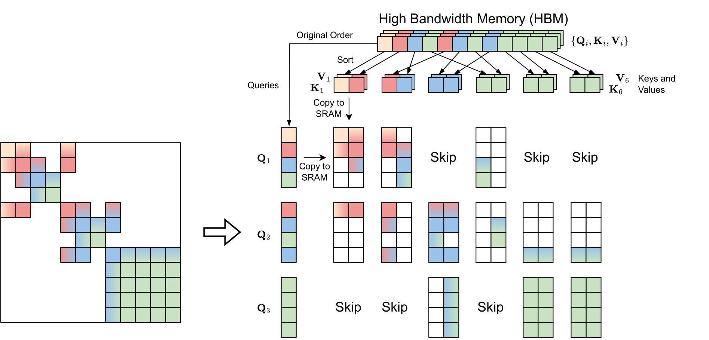

In this paper, we propose the Hierarchical Document Transformer (HDT), a novel sparse Transformer architecture tailored for structured hierarchical documents. Such documents are extremely important in numerous domains, including science, law or medicine. However, most existing solutions are inefficient and fail to make use of the structure inherent to documents. HDT exploits document structure by introducing auxiliary anchor tokens and redesigning the attention mechanism into a sparse multi-level hierarchy. This approach facilitates information exchange between tokens at different levels while maintaining sparsity, thereby enhancing computational and memory efficiency while exploiting the document structure as an inductive bias. We address the technical challenge of implementing HDT's sample-dependent hierarchical attention pattern by developing a novel sparse attention kernel that considers the hierarchical structure of documents. As demonstrated by our experiments, utilizing structural information present in documents leads to faster convergence, higher sample efficiency and better performance on downstream tasks.
Most documents are organized into structural constituents like sections, paragraphs, sentences, bulleted lists, figures, and footnotes. This structure is represented in the visual layout and conveys the author's semantic organization of the text. We exploit this document structure by (1) introducing auxiliary anchor tokens to represent each element in the hierarchy, and (2) developing an efficient sparse attention kernel that exchanges information only between tokens at the same level (siblings) as well as between the respective parent and child tokens. By stacking multiple HDT blocks, information from any token can reach any other token. At the same time, the attention pattern of HDT blocks is highly sparse, leading to gains in computational (and memory) efficiency. More specifically, for the document hierarchy introduced above, we prepend additional [SENT] anchor tokens to the beginning of every sentence, [SEC] anchor tokens to the start of each section, and a [DOC] anchor token to the beginning of the document as illustrated in the following figure:
The attention pattern is restructured into a multi-level hierarchy. Information is exchanged only between tokens at the same level (siblings) and between parent and child tokens. This method maintains sparsity, significantly enhancing computational and memory efficiency.
A key innovation of HDT is the development of a novel sparse attention kernel based on the Triton library. This kernel efficiently handles the sample-dependent hierarchical attention patterns unique to each document structure.

(Left) The Longformer sparse attention pattern is identical for all samples in a mini-batch.
(Right) Our proposed dynamic hierarchical attention pattern considers the document structure and therefore is different for each sample in a mini-batch.
Following FlashAttention, we copy queries, keys and values block-wise to SRAM for fast attention computation using a fused kernel. To maximize the number of empty blocks that can be skipped, we leverage a simple heuristic which is illustrated with an example in the following figure.
Specifically, before copying keys and values to SRAM, we first sort them based on their hierarchy level while keeping the order of the queries unchanged. This ensures adjacency of the most related tokens and hence increases the probability of large empty blocks that can be skipped. Afterwards, we copy the queries, keys and values to SRAM and apply block attention. We process all non-empty blocks in parallel, skipping empty ones.


We compare practical computation of Block-Sparse FlashAttention (Left) and our HDT attention kernel (Right) on the same hierarchical attention patterns. We show the attention mask of the first 1k tokens (~25% of the total document size) of two different documents (row 1+2) in black. The blue grids illustrate the 128 x 64 SRAM blocks which are processed in parallel using the fused kernel. All blocks highlighted in grey contain at least one non-zero attention entry and hence require processing. Due to the reordering of keys and values (columns) in HDT, anchor tokens are aggregated within adjacent blocks leading to a larger number of blocks that can be skipped compared to Block-Sparse FlashAttention.
We first verify the utility of structure-aware attention patterns on a simple mathematical task -> ListOps. Next, we evaluate our pre-trained encoder-only model on SciRepEval proximity tasks. We also investigate the expressiveness of the anchor token representations using our pre-trained encoder-decoder model on the FacetSum summarization tasks and SCROLLS benchmark. Results on SCROLLS below demonstrate that our model can even be applied to long texts which are not explicitly structured. Please find the results of ListOps, SciRepEval, and FacetSum in our paper.
| Model | GovRep | SumScr | QMSum | Qspr | Nrtv | QALT | CNLI | Avg |
|---|---|---|---|---|---|---|---|---|
| ROUGE-1/2/L | ROUGE-1/2/L | ROUGE-1/2/L | F1 | F1 | EM-T/H | EM | Score | |
| LED | 56.2/26.6/28.8 | 24.2/4.5/15.4 | 25.1/6.7/18.8 | 26.6 | 18.5 | 25.8/25.4 | 71.5 | 29.2 |
| HDT (ours) | 49.8/22.2/25.8 | 30.8/7.1/18.6 | 28.3/6.7/18.7 | 33.1 | 14.2 | 29.4/26.4 | 81.4 | 31.4 |
Denote the length (number of tokens) of the longest sentence in a document as \(s\) and the input length as \(n\), the theoretical complexity of HDT attention is \(O(n \times s)\). Therefore, longer inputs bring larger computational savings because \(s \ll n\). This advantage makes it possible for us to pre-train our model on 1 GPU in one day with input length 8,192 that is even longer than most of the LLMs pre-training setting.
Below in the left figure we compare GPU runtime and memory usage of different attention layers, including standard dense attention, block-sparse FlashAttention (using our hierarchical pattern), Longformer sparse windowed attention, and HDT hierarchical attention.
| Model | Longformer | HAT | HDT (ours) |
|---|---|---|---|
| Complexity | \(O(n \times w)\)/td> | \(O(n \times k)\) | \(O(n \times s)\) |
| #Params | 148.66 M | 152.73 M | 108.99 M |
| Time (ms) | 178.82\(_{\pm 6.84}\) | 77.84 \(_{\pm 2.30}\) | 79.8 \(_{\pm 2.96}\) |
| TFLOPS | 5.29 \(_{\pm 0.19}\) | 8.95 \(_{\pm 0.26}\) | 8.99 \(_{\pm 0.34}\) |
| Memory | 11.25 GB | 5.3 GB | 5.85 GB |
The right table above reports runtime and memory consumption of several long-document models with 12 Transformer-based layers. We report complexity, parameters, inference time, throughput, and memory usage using context length \(n=4096\) and mini-batch size 1. Here, \(w=512\) is the Longformer window size, \(k=128\) is the fixed HAT segment length. \(s\) is the length of the longest sentence in the document. Usually, \(s \ll k\).
@inproceedings{He2024COLM,
title={HDT: Hierarchical Document Transformer},
author={Haoyu He and Markus Flicke and Jan Buchmann and Iryna Gurevych and Andreas Geiger},
year={2024},
booktitle={Conference on Language Modeling}
}